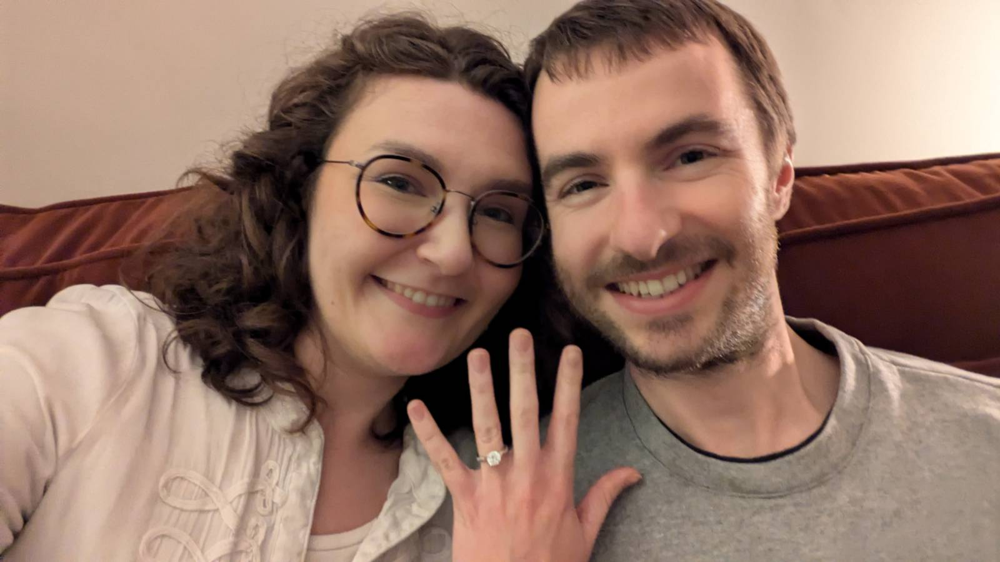

Wedding of Elizabeth Airey & Daniel Cummins

We are delighted to invite you to our wedding! Some information about the day and
the venue can be found below.
We hope that it being on a Thursday does not prove inconvenient. Note that the
following Monday is a bank holiday, so why not treat yourselves to a long
weekend!
Key details:
- The dress code is formal.
- Children are welcome, but please let us know if you are bringing your
children to give us a sense of numbers.
- The ceremony begins at 2 p.m., which will be followed by a drinks reception
(including non-alcoholic options) and canapés.
- The bar will be open to guests before the ceremony.
- Dinner and speeches are expected to start from 5 p.m.
- There will be post-dinner music with a dance floor.
- Evening food will be provided.
- The venue's standard finish time is midnight.
Catering details:
- A selection of hot and cold canapés will be served alongside drinks
after the ceremony.
- A three-course dinner will be served.
- A children's menu is also available for children between the ages of two and
ten. Farnham Castle suggest that parents provide meals for children under the
age of two. Guests aged eleven or older will be served from the adult
menu.
- Still and sparkling water will be served during dining.
- Evening food will be provided (specifics TBC).
- Breakfast will be served the following morning for guests staying overnight
at Farnham Castle.
- Menus can be adapted to cater for all dietary requirements, and separate
vegetarian and vegan menus are available.
Travel details:
- Farnham Castle is a mile from Farnham railway station, which is an hour's
train journey from London Waterloo on South Western Railway. There is a taxi
rank at Farnham station. It is walkable, but uphill towards the castle.
- Farnham Castle is situated just off the A31 and A325, and ten miles south of
the M3 (junction 4).
- Plenty of complimentary car parking is available on site for guests. Cars
parked overnight must be collected by 10:30 a.m. the following day. Disabled
parking bays are available.
Accommodation details:
- A range of accommodation is available on site; single, double, twin and
family rooms. Breakfast is included within the room pricing.
- It may be possible to stay on site the night before the wedding, subject to
availability, which will be known from twelve weeks before the date.
- Farnham Castle does not have a lift. Guests requiring disabled access will
be provided with ramps to ground floor ceremony and reception rooms and ground
floor accommodation.
- Other local options include:
Gift list details:
-
If you wish to buy a gift to commemorate the occasion and contribute to our
future together, we have a wedding gift list which can be found
here. More than anything we
want to have you there to celebrate with us, so please do not feel pressured!